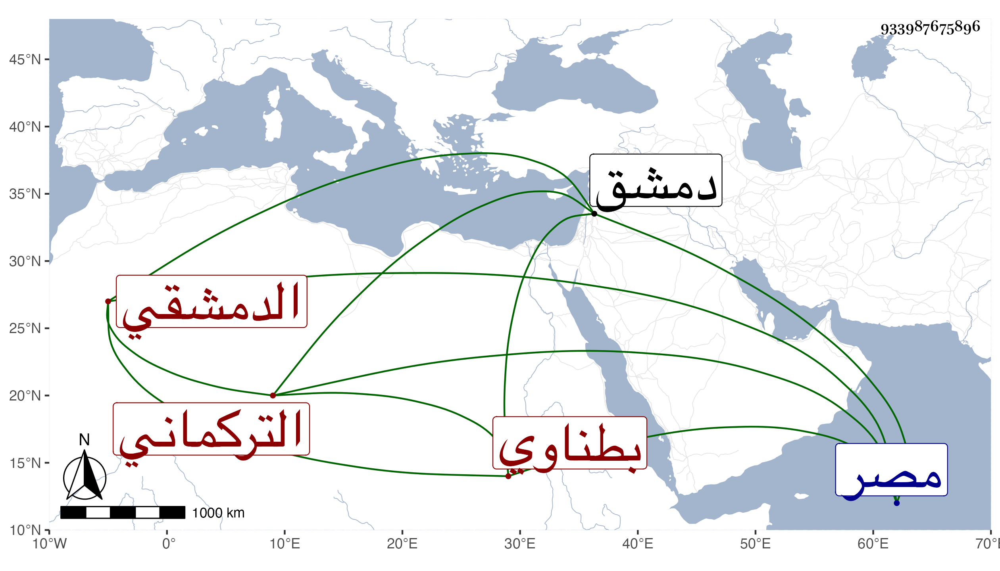

0902Sakhawi.DawLamic.ITO20230111-ara1.EIS1600.933987675896
Biography ID: 933987675896
769
محمد بن أبي هريرة عبد الرحمن بن الحافظ أبي عبد الله محمد بن أحمد ابن عثمان بن قايماز الشمس أبو عبد الله التركماني الأصل الدمشقي ثم الكفر بطناوي ويعرف كسلفه بابن الذهبي . ولد سنة اثنتين وثلاثين وسبعمائة وأسمعه جده الكثير منه ومن زوجته فاطمة ابنة محمد بن القمر والحافظ المزي والشهاب أحمد ابن علي بن حسن الجزري وزينب ابنة الكمال وأبي بكر بن محمد بن أحمد بن عنتر السلمي وفاطمة ابنة عبد الرحمن الدباهي وخلق ، وأجاز له أبو حيان وغيره من مصر . قال شيخنا : وكان من شيوخ الرواية لقيته بدمشق فقرأت عليه ، ومات في الكائنة العظمى في حادي عشري جمادى الأولى سنة ثلاث قيل قتلا بالعقوبة وقيل بل ضربت عنقه صبرا ، وكان ببلده كفر بطنا فأخذه العسكر التمري . ذكره في معجمه وإنبائه وتبعه المقريزي في عقوده روى لنا عنه جماعة .
